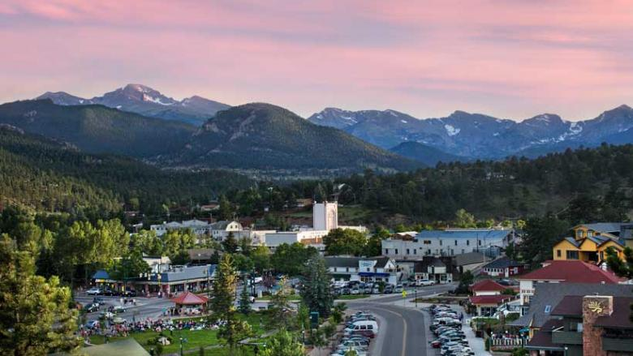
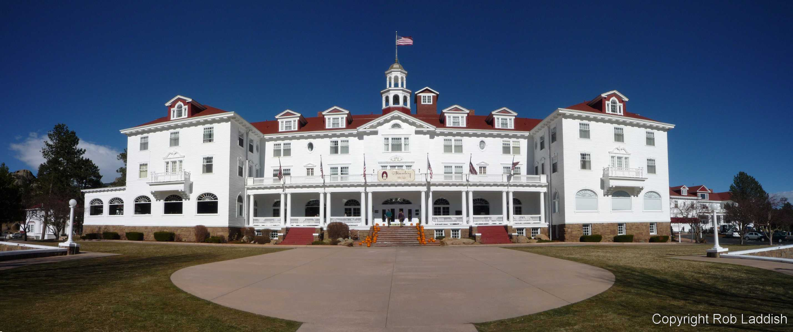

I am so excited to be finally tackling my first 14er mountain this month. I have decided to summarize the details of the activities that I have already planned out. I am very much looking forward to the next post talking about the actual trip and having photos and videos of my own to share.
Day 1: Arriving in Estes Park Colorado
Estes Park is at an elevation of 7,522 feet above sea level, which makes it a great spot to spend a few days acclimating to the elevation since we are coming from sea level. This small little town is nestled right in the middle of the Colorado Rocky Mountains surrounded with beautiful mountain scenery.
 Estes Park with the Rockies in the background.{kind=link}
We have decided to stay in the historic Stanley Hotel while we are in Estes Park which is supposed to be haunted.
 The Stanley Hotel.{kind=link}
The Stanley Hotel is a 140-room Colonial Revival hotel in Estes Park, Colorado. Approximately five miles from the entrance to Rocky Mountain National Park, the Stanley offers panoramic views of Lake Estes, the Rockies and especially Long's Peak. It was built by Freelan Oscar Stanley of Stanley Steamer fame and opened on July 4, 1909, catering to the American upper class at the turn of the century.[2] The hotel and its surrounding structures are listed on the National Register of Historic Places. The Stanley Hotel also hosted the horror novelist Stephen King, serving as inspiration for the Overlook Hotel in his 1977 bestseller The Shining. Today, it includes a restaurant, spa, and bed-and-breakfast and provides guided tours which feature the history and alleged paranormal activity of the site. - Wikipedia
Day 2: Four Wheeling
We wanted to have a few days to properly acclimate to the altitude before we attempt to summit Longs Peak. Which works out well because it gives us a lot of time to explore the park and check out all of the other sites, which also making this a relaxing trip as well.
What better way is there to explore the park and cover lots of ground in a short period of time then renting some ATV's!
{kind=link}
Day 3: Hiking out to Base Camp at the Boulder Field
If you are wanting to climb Longs Peak in one day it can be done. But you have to start at 2AM, since this peak is notorious for its afternoon thunderstorms. Instead of making this a single day hike we decided that it would be better to hike up to the boulder field and setup base camp. This way we can still acclimate since the Boulder Field is at an elevation of 12,750 feet. This also means that we do not have to wake up at 2AM to begin our hike.
{kind=link}
There are no sources of water at this point, so we have to hike in with enough water to last us for the two days this also includes cooking. We have been closely following the weather reports since we are doing this in September and there has already been reports of snow and ice. Despite these reports the conditions still appear to be good for summiting and not difficulties have been reported as of yet.
Day 4: Summit Day
We will be waking up dark and early around 4AM, then eating a good breakfast and lots of coffee for some of us. We will then begin to break down the campsite if we feel the time permits. Since we have to summit before noon because of daily storms, we also have the option to break the campsite down on our egress. We have the time since I have booked the site for 2 days just in case of inclement weather.
We will be summiting Longs Peak via the Keyhole Route. We will approach the Keyhole route from the boulder field, this will lead us to the Ledges, then the Trough, next is the Narrows, and then the Homestretch which ends at the summit.
{kind=link}
Day 5: Sports Climbing in Boulder Canyon
Since we are out in Colorado which has thousands or different climbing routes to choose from. We felt that this would be a great opportunity to learn some more outdoor skills and hire a guide for the day to go over some sports climbing techniques with us. All of us in the group have done top rope climbing, and some even lead climbing in the rock gym. But this is completely different then actually climbing outside on a sports route. Even though you might have the book smarts to attempt to do something, I would still recommend hiring a professional for the first time. You can always learn something, and this can help boost your confidence so that you know you are doing it correctly.
We will be heading out early in the morning from Estes Park to Boulder Canyon where there are over 850 different sports routes. We will be starting off with something simple, like a 5.6 or a 5.7 and progress from there.
{kind=link}